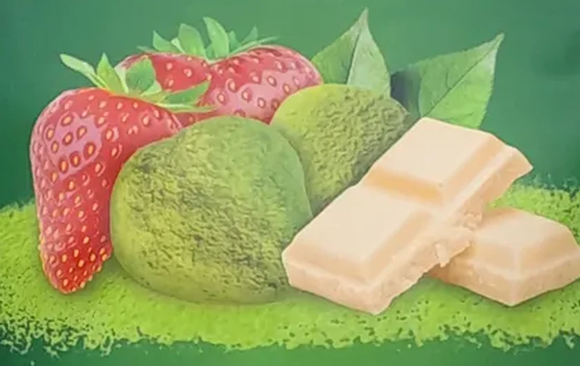
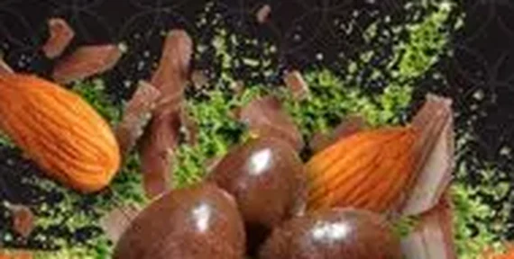
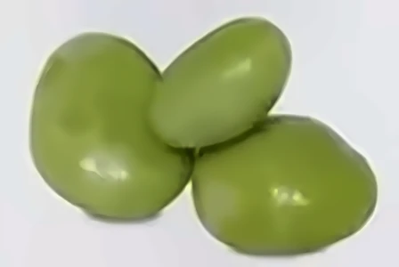

Almendra
con chocolate con leche y matchaCrujiente y tostada por dentro, cremosa por fuera. El chocolate con leche resalta su sabor a nuez y el matcha equilibra el dulzor.
Almendra, arándano y fresa cubiertos de chocolate y un toque de matcha japonés.
Descubre cómo se hace

Las hojas crecen a la sombra para volverse más verdes y suaves. Después se secan y se muelen en piedra, despacio, hasta convertirse en un polvo fino y aromático: el matcha.
Cada pieza pasa por tres momentos sencillos que le dan su sabor y su textura.

Almendras tostadas y frutos deshidratados, crujientes y llenos de sabor.

El chocolate se agrega poco a poco, capa sobre capa, hasta envolver cada fruto.

Al final se espolvorea matcha. Le da su color verde y un final suave y fresco.
Así lucen al terminar: frutos cubiertos de chocolate y vestidos de matcha.



Cada fruto tiene el chocolate que mejor lo acompaña.
Crujiente y tostada por dentro, cremosa por fuera. El chocolate con leche resalta su sabor a nuez y el matcha equilibra el dulzor.

Un toque ácido y frutal envuelto en chocolate blanco. Suave, dulce y con un final verde que invita a otra pieza.

Fresa deshidratada, crujiente y perfumada, cubierta de chocolate blanco y polvo de matcha. Fresca y ligera.

Cremoso y delicado. Deja que el matcha luzca su color y su sabor. Ideal para la fresa y el arándano.
Dulce y redondo, con notas de caramelo. El compañero perfecto para la almendra tostada.
El matcha aporta color y frescura, el fruto la textura y el chocolate une todo en cada bocado.